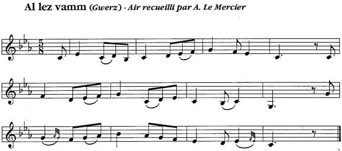

Version 1 et Mélodie 1
Version 1 et Mélodie 2
Version 2 et Mélodie 3
Retour au "Frère de Lait"


|
"GWERZIOU BREIZ IZEL" 2, (Kentel gentañ) I 1. - Me am eùs ul lez-vamm 'r gwasañ 'ouf?ec'h da gavet; Un eur a-raok an deiz gant-hi me a ve savet (bis). 2. Un eur a-raok an deiz gant-hi me a ve savet, Ha kaset da vouit dour da feunteun ar Washalek (bis). 3. Pa oan tal ar feunteun, ma fiche?t hanter-garget, Ha me 'klewet ur vouez hag a oa deliberet (bis); 4. Ha me 'klewet ur vouez hag a oa deliberet Gant potr un den-jentil 'c'h abreuvi he roñsed (bis); 5. Hen o kregi em dorn, ma c'has d'ar valaneg, Lakad ma daoulagad da sellet ouz ar stered (bis); 6. Lakad ma daoulagad da sellet ouz ar stered Hag he re he-unan da sellet ouz ar merc'hed (bis). 7. Pa deuis a-c'hane, hag hen o roi d'in kant skoed, Da vezur ma bugel, evel pa vije ganet (bis)... 8. - Me am eus ul lez-vam, 'r gwasa 'oufec'h da gavet, Pa arruin er gêr, me a vo sur gourdrouzet (bis). 9. - Pa arrufet er gêr, mar bec'h ganthi gourdrouzet, M'ho ped da lâret d'êhi 'po kât ar feunteun troublet (bis). 10. M'ho ped da lâret d'êhi 'po kât ar feunteun troublet, Gant potr un den-jentll, hoc'h abreuvi he roñsed (bis). II 11. Pa arruas er gêr, a oe gant-hi gourdrouzet, Tolet e-maes an ti gant he lez-vamm milliget (bis). 12. A-c'hane hi zo êt da di he maerones, Da di itron ar Genkis, hi a oa bet alies (bis).... 13. Ànn itron d'he mates un de a d'eus lâret: - Na terrupl, e?mezhi, ho kavan-me drouk-liouet (bis)! 14. Na terrupl, emezhi, ho kavan-me drouk-liouet, Pa arrujac'h '?m zi, al liou-se? na dougec'h ket (bis). 15. Kontrol a rit d'ar roz, a zo barzh ar jardinoù, Ha d'ar ieot, gomamz glaza, d'ar c'houlz-mañ, barzh ar prajoù (bis). 16. - Perag, ma maerones, n'am kavfec'h ket drouk-liwet, Pa 'z on gânt an derzienn pewar miz 'zo tremenet (bis)? 17. - Perag 'ta, Jaketa, n'ho poa ket d'in-me lâret, Ha 'vijen êt en kér, da glask d'eoc'h medesined (bis); 18. Ha 'vijen êt en kér, da glask d'eoc'h medesined, Jakota ar Penhoet, o dije ho kwellaët (bis). 19. - Tavit, ma maerones, tavit, n'am c'haketet ket, Kloaregig an aotroù a zo kiriek d'am c'hleñved (bis). 20. Ànn itron ar Genkiz, o klewet he froposioù, Ed-eùs kaset lizer da gloaregik ann aotroù (bls). 21. - Jaketa ar Penhoet a glewan a zo gwallet, C'hwi rank he eurediñ, ya, pe veza forbanet (bis). 22. C'hwi rank he eurijiñ, ya, pe veza forbanet, Dont da guitad ho pro, elec'h na retornfet ket (bis). 23. - Me zo 'r c'hloarek yaouank, prest da vezañ beleget, Itron , mar laret se , setu me glac'haret (bis); 24. Itron , mar laret se , setu me glac'haret; Paj bihan an aotroù hag hi zo mignoned. 25. An deiz-all 'oant er jardin, o terriñ kraoñv da zebriñ, He fenn war e varlenn hag eñ ouzh he c'haresiñ. - 26. An itron Ar Genkiz, o kleved e broposioù, He-deus skrivet lizer da baj bihan an aotrou: 27. "Jaketa ar Penhoët, a glevan, zo gwallet. C'hwi a rank hi eurediñ, pe ve'añ forbanet. 28. C'hwi a rank hi eurediñ, pe ve'añ forbanet. Dont da guitad ho pro, elec'h na retornfet ket (bis). 29. - Me 'zo ur paj bihan, nevez deut ouzh an arme, Itron mar lârit-se, me 'zo prest da vont adarre (bis). - III 30. Pa oe grêt an dimi, ha grêt ivez an eured. Paj bihan an aotroù adarre 'zo partiet (bis). 31. Selu seis vloaz tremenet hag an eis vloaz achuet, Paj bihan an aotroù c'hoaz er gêr n'arru ket (bis); 32. Paj bihan an aotroù c'boaz er ger n'arru ket, Jaketa ar Penhoet adare a zo dlmêt (bis). IV 33. Pa oan en Keridon war gein ma marc'h o toned Ha me 'klewet ur vouez hag a oa deliberet (bis); 34. Ha me 'klewet ur vouez hag a oa deliberet, Gant meur a sonerien na diouzh taol an eured (bis). 35. - Digorit din ho tor, plac'hig diou wez euredet Àrru 'on da digas d'ac'h ar pez poa goulennet (bis); 36. Àrru 'on da digas d'ac'h ar pez poa goulennet Ur gegel a gors Spagn, hag ur c'hlevez alaouret (bis). 37. - Oh ! mê a zo amañ euz kosteioù ma fried, Mar rafenn re a vrud, marteze, 'ven skandalet (bis).... 38. - Digorrit d'in ho tor, plac'hig diou wez eurejet, Rag indan an amzer ma daoudorn a zo klezret (bis); 39. Rag indan an amzer ma daoudorn a zo klezret O terc'hel brid ma marCh ha ma c'hlevez alaouret (bis).... 40. - 'C'h àn da digori an nor, 'pa dlefenn be'añ lazhet, Pa glevann lared eo c'hwi ez eo ma c'hentañ pried (bis). 41. An nor pa d-eùs digoret, 'n e gerc'henn eo lampet, Etre e ziouvrec'h eno, war al lec'h, ez eo marvet (bis)! 42. Ur mevel 'oa gantañ, Per a lâre anezhañ: - Ma mevel, sent ouzhin, dalc'h ma c'hlevez, gra ouzhin(bis)! 43. Sell aze ma arc'hant ha ma holl akoutramant, Kerzh d'ar gêr, lar d'am c'herent vin marvet em rejimant (bis): 44. - N'am-eus ket ar galon, ma mestr kêz d'ho lazhañ, N'am-eus ket ar galon, balamour m'ho servijan (bis). 45. Ha na oa ket he c'hir gantañ c'hoazh peurlavaret. Âr paj bihan eno war al lec'h a zo marvet! 46. Setu un intañv yaouank an noz kentañ he eured! - Kanet gant Marc'harid Fulup |
TRADUCTION de Luzel (GBI2, 1ère leçon) I 1. J’ai une marâtre, la pire que vous puissiez trouver: Une heure avant le jour elle me force à me lever, (bis) 2. Une heure avant le jour elle me force à me lever, Et elle m’envoie chercher de l’eau à la fontaine de Goashalec. 3. Comme j’étais auprès de la fontaine, mon pichet à moitié rempli, Voilà que j’entendis une voix qui était délibérée. 4. Voilà que j’entendis une voix qui était délibérée, Celle du valet d’un gentilhomme qui abreuvait ses chevaux. 5. Et lui de me prendre par la main, de me conduire à la genêtaie, Et de mettre mes yeux à regarder les étoiles. 6. Il mit mes yeux à regarder les étoiles, Et les siens propres à regarder la jeune fille... 7. Quand je m’en revins, et lui de me donner cent écus Pour nourrir mon enfant, comme s’il était né . 8. — J’ai une marâtre, la pire que vous puissiez trouver, Quand j’arriverai à la maison, je serai grondée par elle 9. — Quand vous y arriverez, si vous êtes grondée par elle, Je vous prie de lui dire que vous aurez trouvé l’eau troublée; 10. Je vous prie de lui dire que vous aurez trouvé l’eau troublée Par le valet d’un gentilhomme qui abreuvait ses chevaux - .... II 11. Quand elle arriva à la maison, elle fut grondée, Jetée hors de la maison par sa marâtre maudite. 12. De là elle est allée à la maison de sa marraine. Chez Madame du Quenquis, où elle avait été souvent... 13. La dame dit un jour à sa servante; — Je vous trouve, dit-elle, terriblement pâle! 14. Je vous trouve, dit-elle, terriblement pâle; Quand vous arrivâtes chez moi, vous n’aviez pas ce teint-là. 15. Vous faites contrairement à la rose qui est dans les jardins, Et aux herbes, qui verdissent, à cette époque, dans les prés. 16. — Comment, ma marraine, ne me trouveriez-vous pas pâle, Puisque j’ai la fièvre, voici quatre mois passés ?.... 17. — Pourquoi donc, Jacquette, ne me l’aviez-vous pas dit? Et je serais allée en ville vous chercher des médecins; 18. Et je serais allée en ville vous chercher des médecins, Jacquette du Penhoët, qui vous auraient guérie... 19. — Taisez-vous, ma marraine, ne vous moquez pas de moi, C’est le petit clerc de Monseigneur qui est la cause de mon mal.... 20. Madame du Quenquis, en entendant ses propos, A envoyé une lettre au petit clerc du Seigneur: 21. — Jacquette du Penhoët est gâtée, me dit-on, Il vous faut l’épouser, oui, ou être banni; 22. Il vous faut l’épouser, oui, ou être banni, Quitter votre pays, où vous ne retournerez plus. 23. — Je suis un jeune clerc, sur le point d’être fait prêtre, Madame, et si vous dites cela, me voici désolé! 24. Madame, si vous dites cela, me voici désolé: Le petit page du Seigneur et elle sont bons amis. 25. L’autre jour, dans le jardin, ils cassaient des noix pour manger, Et sa tête à elle était sur ses genoux, et il la lui caressait ! 26. Madame du Quenquis, entendait ses propos, A écrit une lettre au petit page du Seigneur: 27. — Jacquette du Penhoët est gâtée, me dit-on, Et il vous faut l’épouser, ou être banni; 28. Il vous faut l’épouser, ou être banni, Et quitter votre pays, où vous ne retournerez plus. 29. — Je suis un jeune page, nouvellement arrivé de l’armée, Madame, si vous dites cela, je suis prêt à y retourner... - III 30. Quand furent faites les fiançailles et aussi les noces, le petit page du Seigneur est reparti. 31. Voilà sept ans passés, et les huit ans révolus, Et le petit page du Seigneur ne revient pas à la maison; 32. Le petit page du Seigneur ne revient pas à la maison: Jacquette du Penhoët s’est remariée. IV 33. — Quand j’étais à Keridon, sur mon cheval, revenant, Voilà que j’entendis une voix qui était délibérée; 34. Voilà que j’entendis une voix qui était délibérée, Avec nombre de sonneurs, à la table des noces 35. — Ouvrez-moi votre porte, fille deux fois mariée, Je viens vous apporter ce que vous m’aviez demandé; 36. Je viens vous apporter ce que vous m’aviez demandé, Une quenouille de jonc d’Espagne et une épée dorée. 37. — Oh ! moi je suis ici aux côtés de mon mari. Si je faisais trop de bruit, je serais peut-être gourmandée. 38. — Ouvrez-moi votre porte, fille deux fois mariée, Car mes deux mains sont engourdies sous le temps; 39. Car mes deux mains sont engourdies sous le temps, En tenant la bride de mon cheval et mon épée dorée. 40. — Je vais ouvrir la porte, dussé-je être tuée, Puisque vous êtes mon premier mari. 41. Dès qu’elle eut ouvert la porte, elle sauta à son cou, Et mourut entre ses bras, sur la place! 42. Il avait avec lui un valet qui s’appelait Pierre: — Mon valet, obéis-moi, prends mon épée, et fais en de moi! 43. Voilà mon argent et mon accoutrement, Rentre chez moi, et dis à mes parents que je suis mort au régiment. 44. — Je n’ai pas le cœur, mon bon maître, de vous tuer, Je n’en ai pas le cœur, parce que je suis votre serviteur. 45. Et il n’avait pas fini de parler, Que le petit page mourut sur la place! 46. Voilà un jeune veuf, la première nuit de ses noces! Chanté par Marguerite Philippe, de Pluzunet — Côtes-du-Nord. |
GWERZIOU BREIZ IZEL 2, (Eil kentel) I 1. O retorn euz ul leur-nevez, Me am-boa graet ur bromese. 2. Ur plac'hig koant 'm boa rankontret Hag ez oa plijet d'am souhet. 3. Ha me o c'houlenn diouti: - Merc'hig yaouank, da zimezi? 4. - Yaouankig-mad en em gavan Da zimezi c'hoazh er bloaz-man. 5. - Ur mouchouar seiz fleuriet Hag ur walenn gaer alaouret, 6. Mar bec'h fidel d'ho promese, Merc'h iaouank, setu-int aze. 7. Me hec'h a-bremañ d'an arme, Ha da servijiñ ar roue, 8. Ha bars un daou vloaz pe un tri, Me a zeuio d'hoc'h eurujiñ. II 9. Setu an daou vloaz tremenet, He zad en-eus hi dimezet; 10. He zad hen eùs hi dimezet D'un den kozh ha na gare ket . 11. - Evit sentiñ euz ho komzoù, Ma zadig, me eñ kemero; 12. Me eñ kemero da bried, Met kousked gantañ na rin ket. 13. Pa oa an hanter-noz o son, Hi o kleved mouez ur c'hlaron; 14. Hi 'klewed mouez he servijer 'Oa o retorn euz ar brezel. 15. An nor pa 'd'eus bet digoret, Ën he c'hichenn ez eo lampet; 16. En he c'hichenn ez eo lampet; Ar plac'h kerkent 'zo desedet! 17. Ur mevel pini 'oa gantañ, A larer Pier anezhan : 18. - Pier, ma mevel, sent ouzhin, Kemer ma c'hleze, gra ouzhin! 19. Selu aze an holl arc,hant, Ivez ma holl akoutramant. 20. Kerzh d'ar ger ha lar d'am c'herent 'Vin desedet em regimant. - 21. N'oa ket e c'her peurlavaret, En he c'hichenn 'oa desedet. 22. Ha setu un intañv kozh graet An noz kentañ euz e eured! Kanet gant Marc'hrit Fulup |
TRADUCTION de LUZEL (GBI2, 2. leçon) I 1. En revenant d’une aire-neuve, Je fis une promesse. 2. Je rencontrai une jolie jeune fille, Et elle me plut à souhait. 3. Et moi de lui demander: — Jeune fille, vous fianceriez-vous ? 4. — Je me trouve bien jeune encore Pour me fiancer cette année. 5. — Un mouchoir de satin à fleurs Et une bague dorée, 6. Si vous êtes fidèle à votre promesse, Jeune fille, les voilà. 7. Pour moi, je vais, à présent, à l’armée, Pour servir le roi. 8. Et dans deux ans, ou trois, Je reviendrai vous épouser. II 9. Voilà les deux ans passés, Son père l’a fiancée; 10. Son père l’a fiancée A un vieillard qu’elle n’aimait point. 11. — Pour obéir à vos paroles, Mon père chéri, je le prendrai; 12. Je le prendrai pour mari, Mais pour coucher avec lui, non point... 13. Comme minuit sonnait, Elle entendit la voix d’un clairon; 14. Elle entendit la voix de son serviteur, Qui revenait de la guerre. 15. Quand elle ouvrit la porte, Il sauta auprès d’elle: 16. Il sauta auprès d’elle ... La jeune fille mourut à l’instant! 17. Un valet était avec lui Et on l’appelait Pierre: 18. — Pierre, mon valet, obéis-moi, Prends mon épée et fais en de moi. 19. Voilà tout mon argent, Et aussi tout mon accoutrement. 20. Vas à la maison, et dis à mes parents Que je serai mort au régiment. 21. Il n’avait pas fini de parler, Qu’il mourut auprès d’elle. 22. Et voilà un vieillard fait veuf La première nuit de ses noces ! — Chanté par Marguerite Philippe, de Pluzunet — Côtes-du-Nord. |
|
(1) Dans le premier volume (pages 267 — 271), j’ai déjà donné deux versions de ce chant, mais beaucoup moins complètes. Cette dernière leçon a été recueillie depuis la publication de ce 1er volume, et voilà pourquoi elle ne se trouve pas à la place et au rang qu’elle devrait occuper dans l’ordre de classification que j’ai généralement suivi, selon la nature, les analogies et la date probable ou certaine des pièces. — La même observation est applicable à plus d’une autre pièce du présent volume. (2) Rapprocher cette pièce de celle du "Barzaz-Breiz", page 163, sixième édition [Le frère de lait]. (3) Mme Eva Guillorel reproduit dans sa thèse de doctorat "La complainte et la plainte..." les pages du carnet de collecte de F.M. Luzel où il a noté la version N°1 chantée par Marguerite Philippe. Elle souligne le travail de réécriture et de mise en forme effectué par un collecteur réputé particulièrement soucieux de restituer les chants tels qu'il les a entendus. Il s'agit de répétitions de vers pour obtenir des distiques homogènes, contraction de certains mots ou, au contraire, d'ajout de mots ou d'expressions; ou bien même de modifications de l'ordre des mots. Cette remarque s'applique en particulier à l'épisode du valet Pierre, où tous les octosyllabes de l'original ont été transformés en vers de 13 pieds. (4) Le carnet de collecte N°2 de La Villemarqué, publié en novembre 2018, contient une version de la présente gwerz assez proche de la version 2 ci-dessus. |
(1) In the first volume (pages 267 - 271), I had already edited two versions of the present song that are, by far less complete. The latter versions were collected after the first book was published. Therefore they do not occupy the places or the ranks they ought to in the classification I have adopted, namely according to topic, analogy and probable or certain date of items. The same remark is relevant for most of pieces in volume 2. (2) Compare this piece with the lament in the "Barzhaz-Breizh", page 163, sixth edition.[The Foster-brother, where a résumé of the songs above (in English) will be found]. (3) Mme Eva Guillorel has included in her doctoral thesis "Complaint and lament..." a photo of the pages in F.M. Luzel's collecting book where he recorded the 1st version above from the singing of Marguerite Philippe. The comparison with the edited printed text highlights the thorough rewriting and formatting work carried out by a collector reputed to be very intent on accurate and trustworthy recording of the songs he heard. We find, throughout, lines repeated to form regular distiches, compacted words, or, on the contrary sentences expanded by addition of words or whole phrases, as well as word permutations. This applies especially to the manservant Pierre episode, where all octosyllables were expanded to 13 syllable lines. (4) La Villemarqué's collection book N ° 2, published in November 2018, contains a version of this gwerz which is quite close to version 2 above. |